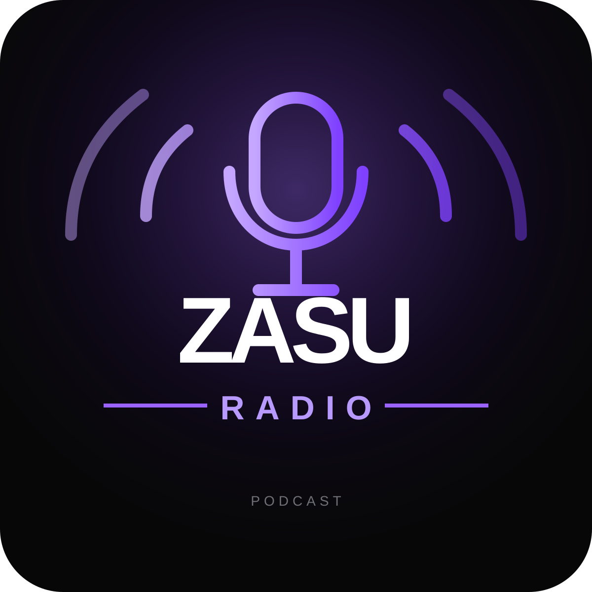

01
田中圭さん・永野芽郁さんの不倫疑惑報道について
芸能人の私生活、報道のあり方、世間の反応について。事実を断定するのではなく、報道をどう受け止めるかという視点で話します。
音楽、カルチャー、時事ネタ。
気になったことを、自由に話す。

芸能人の私生活、報道のあり方、世間の反応について。事実を断定するのではなく、報道をどう受け止めるかという視点で話します。
ZASUが、そのとき気になっていることをジャンルに縛られず話すポッドキャスト。音楽制作からカルチャー、日常、時事まで。
Spotify / Apple Podcastsで配信中。好きなアプリから聴けます。新しいエピソードのお知らせはXでも更新します。